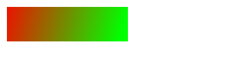

Leapjs Documentation
目录¶
[TOC]
基本绘图函数¶
以下函数只执行绘制命令，不会创建对象，因此无法获得对应的属性
基本形状¶
说明：前面加*的参数表示可选参数，除color是字符串参数外，其他参数均为数值参数。
长方形 rectangle()
rectangle(x, y, w, h, *color)
/***************************
x - x坐标
y - y坐标
w - 宽度
h - 高度
color - 颜色，默认为orange
***************************/
圆 circle()
circle(x, y, r, *color)
/**************************
x - x坐标
y - y坐标
r - 半径
color - 颜色，默认为orange
**************************/
线段 line()
line(x1, y1, x2, y2, *lineWidth, *color)
/**************************
x1 - 起点x坐标
y1 - 起点y坐标
x2 - 终点x坐标
y2 - 终点y坐标
lineWidth - 线宽，默认为1
color - 颜色，默认为orange
**************************/
点 point()
point(x, y, *color)
/**************************
x - 点x坐标
y - 点y坐标
color - 颜色，默认为orange
**************************/
三角形 triangle()
triangle(x1, y1, x2, y2, x3, y3, *color)
多边形 polygon()
polygon(x1, y1, x2, y2, x3, y3, ..., *color)
/**************************
x1, y1 - 第一个点的坐标
x2, y2 - 第二个点的坐标
...
至少需要3个点，按照点的顺序连接起来
**************************/
椭圆 ellipse()
ellipse(x, y, rX, rY, *color)
图片 image()
image(src, x, y, w, h)
/**************************
src - 图片地址，图片需要从同一个网站地址，或者支持跨域访问
x, y - 图片左上角顶点的位置
...
图片第一次绘制时需要从服务器下载，因此可能需要一段时间后才能绘制出来
如果覆盖了后面的图像，重新运行代码即可
**************************/
样式填充 fill()¶
fill(bool):设置是否填充图形，默认为填充，设置后对所有之后的图形生效
circle(100, 100, 50, 'red') // 填充的圆
fill(false);
circle(200, 200, 10, 'orange') // 不填充的圆
基本图形对象¶
基本图形对象 Shape¶
Shape 是所有图形对象的基础，也就是说，其他继承自Shape的图形都有Shape的属性和方法。
class Shape {
constructor ()
属性
形变 transform
记录图形的位移、斜切、旋转属性，详见Transform一节
方法
描边
stroke()将图形对象的边框画出来
var rect = Rectangle(100, 100, 100, 50); rect.stroke()
填充
fill()将图形填充
画 draw()
将图形画在画布上，先stroke再fill
平移 translate(x, y)
将原始图形平移x、y个像素
缩放 scale(x, y)
将图形水平方向放大至原始大小的x倍，将垂直方向放大至原始大小的y倍。
斜切 skew(x, y)
将图形往x、y轴方向倾斜x、y比例，当x=1时，往x方向倾斜45度
设置形变中心点 setAnchor(x, y)
设置形变的中心点，x、y为比率，当x=0.5， y=0.5时，中心点在图形中心点。
旋转rotate(degree)
图形旋转一定的角度，以角度作为单位，360度为一圈
得到形变后的真实坐标点 getRealPoint(p)
p：原始图形上的某个点，{x: 100, y:100}
返回值：在画布上真实的坐标值 {x: 200, y:120}
点击事件 click()
绑定点击事件后，当图形被鼠标点到，就会触发该事件
碰到鼠标 touched()
判断是否碰到鼠标
返回值：true / false
碰撞collide(shape)
判断图形是否碰到另一个图形
返回值：true / false
克隆 clone()
返回一个完全相同的克隆体，深度复制所有的属性和方法。
返回值：shape
圆形 Circle¶
class Circle extends Shape {
constructor (x = 50, y = 50, r = 20, color="orange")
属性值
坐标值 x,y
圆形的坐标值
半径 r / radius
等价属性，可以任意使用其中一个
点 Point¶
class Point extends Circle {
constructor (x, y, color="red")
三角形 Triangle¶
const Triangle = Polygon;
矩形 Rectangle¶
class Rectangle extends Shape
constructor (x = 100, y = 100, w = 100, h = 50, color="orange")
属性值
坐标点 x,y
矩形左上角顶点的坐标值
宽度w / width
矩形的宽度
高度 h / width
矩形的高度
方法
设置碰撞的区域 setCollisionScale(w, h)
设置碰撞区域大小，默认为1，即正常大小
当w设置为0.5时，表示可碰撞区域的宽度为原始宽度的一半
椭圆 Ellipse¶
class Ellipse extends Shape {
constructor (x, y, rX, rY, color="orange")
文本 Text¶
class Text extends Rectangle
constructor (src = 'LeapLearner', x = 0, y = 0, size = 20, color="orange", font = 'Arial')
属性
文本内容 src
获取或者设置文本的内容
字体大小 size
获取或者设置文本字体大小
字体 font
获取或者设置文本字体
图像 Sprite¶
class Sprite extends Rectangle
constructor (src, x = 0, y = 0, w = null, h = null)
属性
图片链接 src
获取或者设置图片的链接
加载完成事件 onload
如果定义了onload事件，那么当图片加载完成时就会触发
方法
裁剪图片 clip(sx, sy, sw, sh)
sx,sy: 图片裁剪开始的位置
sw, sh: 裁剪的图片大小
序列帧动画 Animation¶

class Animation extends Sprite
constructor (src, x, y, w, h)
方法
设置序列帧 setFrame(c, r)
c: 序列帧的列数，如上述实例的图片中，列数为8
r: 序列帧的行数
默认参数为4x1
设置播放速度 setSpeed(speed)
设置序列帧的播放速度，多少个draw更新一次序列帧，默认为10
图形样式¶
图形一般包含边和填充，图形的样式也是由这两块共同组成。
线条和填充¶
图形的线条和填充分别由strokeStyle和fillStyle这两个属性来决定
颜色常量¶
fillStyle与stokeStyle可以设置为表示颜色的字符串常量，从而可以直接设置图形的颜色。
一些常见的颜色的常量有aqua、black、blue、fuchsia、gray、green、lime、maroon、navy、olive、purple、red、silver、teal、white、yellow。
RGB值¶
如果用放大镜看显示器的屏幕，会发现屏幕的每个点都是由3个颜色组成，分别是
- Red, 红色
- Green，绿色
- Blue，蓝色
而这3个颜色的首字母组合，即RGB，这也是RGB值的由来。在RGB值的组成中，每一个数字分布代表了每个颜色的强弱，0代表关闭，255代表最高。
有了这3个基本的颜色，按照亮度的不同，就以组成各种个样的颜色。
透明度¶
透明度的数值从0到1，0代表完全透明，即什么都看不见，1代表全不透，是图像透明度的默认值。
在Canvas中，图像的透明度用globalApha来表示，设置图形的globalAlpha值即可获得不同的透明度。
var rect = new Rectangle(10, 10, 200, 100);
rect.globalAlpha = 0.1;
rect.draw();
RGBA值¶
RGBA值是RGB的扩充，在使用颜色时可以直接制定该颜色的Alpha值。
rect.fillStyle = "rgba(255, 255, 0, 0,5)";
前三位对应的是RGB值，第四位即透明度值
HSLA¶
即HSL添加透明度Alpha
虚线¶
图形的setLineDash方法可以用来设置虚线条，它接受一个数组对象，按照数组的顺序，轮流绘制线条的实部、虚部。
var line = new Line(100, 100, 300, 100);
line.setLineDash([5, 10]);
line.stroke();
透明度¶
设置图形的globalAlpha可以改变图形的透明度，默认为1，设置区间：0~1。
叠加方式¶
设置图形的globalCompositeOperation属性可以设定图像的叠加方式。机制比较复杂，不建议使用。
渐变色¶
在上面的例子中，我们图形的颜色是单一的。而在实际生活中，颜色往往都不是均匀的。我们可以创建一个变化的颜色来实现这个效果。
实例：渐变色¶
var grd = ctx.createLinearGradient(0,0,175,50);
grd.addColorStop(0,"#FF0000");
grd.addColorStop(1,"#00FF00");
var rect = new Rectangle(10, 10, 175, 50);
rect.fillStyle = grd;
rect.draw();
渐变色效果

addColorStop是在图像的特定位置创建出制定的颜色，中间的变化则由计算机自动完成。
通过添加更多的颜色，我们可以创建出更多特殊的渐变色。
彩虹是难得一见的奇观，一般只有雨过天晴的时候才会出现，现在，我们就来创建一个彩虹出来。
音乐与音效¶
好的项目离不开音效，合适的音效可以让一个项目发挥出200%的效果。
var music = new Audio();
music.src = "ddd.mp3"
music.play();
属性和方法
| 属性 | 作用 | | | ---------------- | ------------- | ---- | | src | 获取或者设置音乐链接地址 | | | oncanplaythrough | 在音效加载结束后使用该方法 | | | | | |
音乐¶
背景音乐一般是长度较长的音乐，且需要循环播放。我们可以将音效的loop属性设置为true，这样只要播放一次就可以了。
var music = new Audio();
music.src = "ddd.mp3"
music.loop = true;
music.play();
音效¶
无论是音乐还是音效，浏览器在加载时都需要耗费一定的时间，因此一般都是通过异步加载的。因此只有在加载结束后才能进行播放。一般通过oncanplaythrough函数来调用播放音效。
如果是音效，我们可以在项目执行之前进行加载。本书不涉及到资源的管理和加载，如果有兴趣，可以去网上了解更多预加载的知识。
实例：色阶钢琴¶
var url = "http://llcs-1252287760.cossh.myqcloud.com/Piano/";
var urls = [ "40-C.mp3", "42-D.mp3", "44-E.mp3", "45-F.mp3", "47-G.mp3", "49-A.mp3", "51-B.mp3"];
var Key = Rectangle;
Key.prototype.click = function(){
//this.audio.currentTime = 0;
this.audio.play();
};
for(var i=0; i<urls.length; i++){
var key = new Key(0, 550/7*i, 350, 550/7);
key.fillStyle = RGB(0, 200-20*i, 200-20*i);
key.audio = new Audio();
key.audio.src = url + urls[i];
key.fill();
}
事件¶
鼠标事件¶
事件驱动在JavaScript中是非常常见的一种程序设计模式，通过监测事件的发生，调用预定的函数，从而实现异步执行的效果。
比如说，当鼠标在画布上移动时，鼠标的坐标值会随之而变，这就是一个简单的事件在驱动着坐标值不断的发生变化。
Mouse的属性
| 属性 | 描述 | | ---- | ------------------ | | x | 鼠标当前的x值，可以在画布左下角看到 | | y | 鼠标当前的y值，可以在画布左下角看到 |
点击事件
当鼠标在画布上点击时，就会触发click事件，如果配置了Mouse.click函数，那么该函数就会执行。
实例：点击成图¶
这个项目的目标是创建一个空白的画布，当鼠标在画布上面点击时，就会在鼠标的位置绘制一个圆圈。
第一步，我们需要创建一个圆，这里我们可以创建一个默认的圆图形。
var circle = new Circle();
第二步，定义一个绘制圆的函数drawEvent，因为我们要将圆绘制在鼠标的位置，因此我们要将圆中心设置为鼠标的位置。
Mouse对象，即鼠标，有两个属性x和y，他们会随着鼠标的移动而发生变化，因此我们只要直接使用这两个属性就可以了。
function drawEvent(){
circle.x = Mouse.x;
circle.y = Mouse.y;
circle.draw();
}
第三步，将函数绑定给click事件
Mouse.click = drawEvent;
完整代码如下，我们用简单的9行代码，就完成了这个例子。
var circle = new Circle();
function drawEvent(){
circle.x = Mouse.x;
circle.y = Mouse.y;
circle.draw();
}
Mouse.click = drawEvent;
一般情况下，我们可以省略函数名，直接定义一个匿名函数，可以简单写成。
var circle = new Circle();
Mouse.click = function(){
circle.x = Mouse.x;
circle.y = Mouse.y;
circle.draw();
}
点击画布，就会在画布上留下一个圆圈。

移动事件¶
当鼠标移动时，就会触发move事件。只要我们定义了move函数，那么该函数就会执行。
实例：写字板¶
Mouse的事件
手机上的事件
如果应用需要在手机上运行，需要特别注意事件的区别。在手机上，没有鼠标的存在，只有点击屏幕后才有移动事件的触发。
电脑：Move -> Down -> Move -> Up/Click -> Down
手机：Down -> Move -> Up/Click
所以为手机开发应用时，我们应该小心的使用这些事件的顺序
实例：点击英雄¶
插入图片
第一步，我们定义两个图片，使用图片对象的draw方法将图片绘制在画布上。
var bg = new Sprite("http://orjajlo36.bkt.clouddn.com/backgroundimage2.jpg", 0, 0, 350, 550);
var item = new Sprite("http://ou1htxdl4.bkt.clouddn.com/coin.png", 150, 100, 50, 50);
bg.draw();
item.draw();
点击执行，就可以将这两张图片绘制在画布上了。
行动起来
接下来，就是让物体开始运动起来了。画布上，我们每隔一段时间(16.7ms)将图形重新绘制一次，因为频率非常块，看起来就像是动起来一样。
这里我们需要先定义一个GameLoop函数，它的作用是在每一帧里绘制图形，同时在下一帧中调用自己。
function GameLoop(){
item.y += 1;
bg.draw();
item.draw();
nextFrame(GameLoop);
}
loadRssAndRun(GameLoop);
在GameLoop中，我们让物体的y值每次都增加一，以达到每次往下移动的效果。最后，我们用一个函数loadRssAndRun(GameLoop);来加载图片并且开始执行这个循环。
完整代码如下：
var bg = new Sprite("http://orjajlo36.bkt.clouddn.com/backgroundimage2.jpg", 0, 0, 350, 550);
var item = new Sprite("http://ou1htxdl4.bkt.clouddn.com/coin.png", 150, 100, 50, 50);
function GameLoop(){
item.y += 1;
bg.draw();
item.draw();
nextFrame(GameLoop);
}
loadRssAndRun(GameLoop);
点击事件
在点中物体时，我们需要让物体消失，然后刷新出一个新的物体。事实上，我们不用这么麻烦，把物体的坐标修改为0就可以了。
item.click = function(){
item.y = 0;
};
随机位置
每次都是固定的位置显然不好玩，让我们同时修改下物体的水平位置，使用一个随机的概念。Math.random()会产生一个0到1的随机数，乘以300，即随机生成一个0到300的随机数。
item.click = function(){
item.y = 0;
item.x = Math.random() * 300;
};
显示分数
接下来就是记录游戏的分数了。让我们新增一个变量score，初始值为0。
var score = 0;
数字是没法直接显示出来的，我们需要将数字转为字符串，利用JavaScript中字符串＋数字，自动将数字转为字符串的特性，我们可以实现数字的转换。
var scoreMsg;
function GameLoop(){
item.y += 1;
scoreMsg = "score:" + score;
bg.draw();
item.draw();
scoreMsg.draw();
nextFrame(GameLoop);
}
当然，别忘了在成功点击物体时增加分数，否则分数就不会增加啦。
item.click = function(){
item.y = 0;
item.x = Math.random() * 300;
score++;
};
完整代码如下
var bg = new Sprite("http://orjajlo36.bkt.clouddn.com/backgroundimage2.jpg", 0, 0, 350, 550);
var item = new Sprite("http://ou1htxdl4.bkt.clouddn.com/coin.png", 150, 100, 50, 50);
var score = 0;
var scoreMsg;
function GameLoop(){
item.y += 1;
scoreMsg = "score:" + score;
bg.draw();
item.draw();
scoreMsg.draw();
nextFrame(GameLoop);
}
loadRssAndRun(GameLoop);
item.click = function(){
item.y = 0;
item.x = Math.random() * 300;
score++;
};
播放声音
没有声音，再好的戏也出不来。让我们来增加两个声音，背景音乐和点击音效，这里增加了两个新的声音对象
var bgm = new Audio();
bgm.src = "http://oq2qlcey8.bkt.clouddn.com/bgm.mp3";
var clickSound = new Audio();
clickSound.src = "http://llcs-1252287760.cossh.myqcloud.com/audio/gold.mp3";
背景音乐我们需要让它循环播放，因此设置loop属性为true
var bgm = new Audio();
bgm.src = "http://oq2qlcey8.bkt.clouddn.com/bgm.mp3";
bgm.loop = true;
bgm.play();
而物体点击音效则是在点击的时候播放，因此我们把它加在点击时
item.click = function(){
item.y = 0;
item.x = Math.random() * 300;
score++;
clickSound.play();
};
最终代码
var bg = new Sprite("http://orjajlo36.bkt.clouddn.com/backgroundimage2.jpg", 0, 0, 350, 550);
var item = new Sprite("http://ou1htxdl4.bkt.clouddn.com/coin.png", 150, 100, 50, 50);
var bgm = new Audio();
bgm.src = "http://oq2qlcey8.bkt.clouddn.com/bgm.mp3";
bgm.loop = true;
bgm.play();
var clickSound = new Audio();
clickSound.src = "http://llcs-1252287760.cossh.myqcloud.com/audio/gold.mp3";
var score = 0;
var scoreMsg;
function GameLoop(){
item.y += 1;
scoreMsg = "score:" + score;
bg.draw();
item.draw();
scoreMsg.draw();
nextFrame(GameLoop);
}
loadRssAndRun(GameLoop);
item.click = function(){
item.y = 0;
item.x = Math.random() * 300;
score++;
clickSound.play();
};
代码重构
在进入下一章节前，我们先对我们的程序进行一个小小的重构。在改变速度这里，我们使用了这么一行代码
item.y += 1;
这里1代表的是速度，但是并不直观。所以我们定义一个变量speed来表达它。
var scoreMsg;
var speed = 1;
...
item.y += speed;
难度提升
接下来，就是我们对游戏的难度进行修改。我们在每一次分数增加的时候去提高物体掉落的速度，这样就能提高游戏难度了！
item.click = function(){
item.y = 0;
item.x = Math.random() * 300;
score++;
speed += 1;
clickSound.play();
};
如果你觉得难度变化太大，你可以降低这个数值，让速度的增长变的慢一点。
游戏结束
游戏结束时，我们在屏幕上写上Game Over。
function GameOver(){
'Game Over'.draw(120, 300, "white");
}
怎么判断游戏结束呢，先用一段伪代码来表示
如果物体超出了画布:
游戏结束
其他情况下：
继续游戏循环
在JavaScript中，就可以写成
function GameLoop(){
...
if(item.y > canvas.height)
GameOver();
else
nextFrame(GameLoop);
}
重新开始
重新开始游戏循环前，我们要做这几件事情
- 把分数清零
- 把物体放回到最上方
- 把速度变为最初的速度
最后执行游戏循环。
function GameStart(){
score = 0;
item.y = 0;
speed = 1;
GameLoop();
}
那什么时候触发游戏重新开始呢，当然是游戏结束的时候了。我们需要在游戏结束时添加一个按钮来激活它。
var retry = new Sprite( "http://osykyzwcn.bkt.clouddn.com/SHAYUx0001.png", 120, 300, 100, 50);
retry.click = GameStart;
function GameOver(){
"Game Over".draw(120, 160, "white");
retry.draw();
}
当游戏结束的时候，这个按钮就会被绘制到画布上，点击就可以重新开始游戏啦。
最终代码
var bg = new Sprite("http://orjajlo36.bkt.clouddn.com/backgroundimage2.jpg", 0, 0, 350, 550);
var item = new Sprite("http://ou1htxdl4.bkt.clouddn.com/coin.png", 100, 0, 60, 60);
var bgm = new Audio();
bgm.src = "http://oq2qlcey8.bkt.clouddn.com/bgm.mp3";
bgm.loop = true;
bgm.play();
var sound = new Audio();
sound.src = "http://llcs-1252287760.cossh.myqcloud.com/audio/gold.mp3";
var speed = 1;
var score = 0;
var hiscore = 0;
item.click = function(){
score += 1;
speed += 1;
sound.currentTime = 0;
sound.play();
item.y = 0;
item.x = Math.random() * 300;
};
function GameStart(){
item.y = 0;
score = 0;
speed = 1;
GameLoop();
}
function GameLoop(){
item.y += speed;
bg.draw();
item.draw();
var scoreMsg = "Score: " + score;
scoreMsg.draw();
if(item.y > canvas.height)
GameOver();
else
nextFrame(GameLoop);
}
var retry = new Sprite( "http://osykyzwcn.bkt.clouddn.com/SHAYUx0001.png", 120, 300, 100, 50);
retry.click = GameStart;
function GameOver(){
"Game Over".draw(120, 160, "white");
retry.draw();
}
loadRssAndRun(GameStart);
键盘事件¶
和鼠标类似，键盘也会触发事件。
down：当按键被按下时触发up：当按键松开时触发press：当按键被按下并且松开时触发
方法一：
Key.a.press = function(console.log('a'));
Key['a']press = function(console.log('a'));
Key是一个对象，因此以上两种方式都可以实现对按键a的监听。
一些特别的键名称
| 按键 | 名称 | 备注 |
| ----- | ---------- | -------- |
| ↑ | ArrowUp | 无press事件 |
| ↓ | ArrowDown | 无press事件 |
| ← | ArrowLeft | 无press事件 |
| → | ArrowRight | 无press事件 |
| Esc | Escape | |
| 空格 | Space | |
| 回车键 | Enter | |
手势事件¶
另外，手机上的键盘需要触发输入才能够显示，因此我们也要避免使用键盘输入。
leapjs包含了对手势的基本支持功能，在手机上，支持4个简单的滑动手势，上下左右，分别对应键盘的上下左右键。使用了这些按键的程序，在手机上可以使用滑动手势来控制。
var rect = new Rectangle(30, 30, 100, 100);
Key.ArrowLeft.down = function(){ rect.x -= 10;};
Key.ArrowRight.down = function(){ rect.x += 10;};
Key.ArrowUp.down = function(){ rect.y -= 10;};
Key.ArrowDown.down = function(){ rect.y += 10;};
function main(){
canvas.clear();
rect.draw();
requestAnimationFrame(main);
}
main();
在这个例子中，我们可以使用键盘的方向键来移动矩形的位置，也可以在手机上用移动手势来控制。
图形变换¶
所有的图形都可以在画布上按照一定的规律进行变换
平移¶
var circle = new Circle(0, 0, 100);
circle.translate(100, 100);
circle.draw();
图形调用translate即可在画布上进行偏移。
如果需要对线条、多变形进行移动时，就可以使用该方式，而不用
var polygon = new Polygon(0, 100, 0, 150, 50, 100, 100, 100, 200, 50);
polygon.translate(100, 100);
polygon.draw();
放大与缩小¶
我们可以改变矩形的宽高来改变矩形的大小，改变圆的半径来改变圆的大小。但是如果我们要改变其他图形的大小，就有点麻烦了。
不过，我们可以通过修改图像的比例来达到这个效果。
rect.scale(2, 2);
同样的，放大缩小时是以坐标原点作为参考系的，我们可以通过设定锚点来修改。
斜切¶
图像的变换都是通过矩形计算进行的，如果读者想要了解更多图形的变换的知识，欢迎点击一下链接学习更多知识。
平行多边形
利用斜切来定义一个平行多边形
实例：阴影的实现¶
如何让物体看起来更立体
var item = new Rectangle(100, 50, 200, 100);
var shadow = new Rectangle(100, 100, 200, 50);
shadow.setAnchor(100, 150);
shadow.skew(0, 0.6);
shadow.fillStyle = "#cccccc";
shadow.fill();
item.draw();
效果如下：

实例
翻页效果的实现
菱形
如何定义一个菱形
##物理效果
碰撞¶
所有图形类都有一个方法collide，接受一个参数，必须是另外一个图形类实例，如果两个图形相互碰撞，那么返回碰撞点坐标。否则返回false
rect.collide(circle);
坐标点是一个对象，因此可以直接使用if来判断是否发生碰撞。
在图形进行旋转、翻转、平移后，碰撞仍可以进行判断。
图像的碰撞¶
为了提高执行的效率，不提供像素级别的碰撞判断，图片的碰撞体积默认为图像宽高的0.8（80%），可以通过setCollisionScale来设定碰撞宽高的比例。